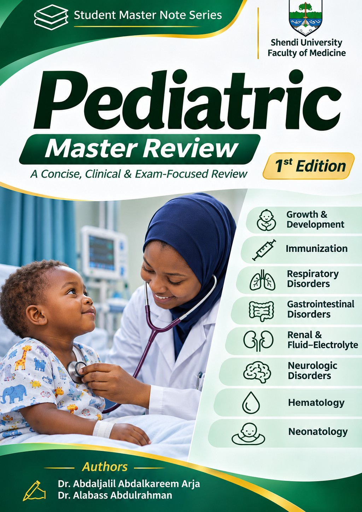

د. عبدالجليل ارجاد. العباس عبدالرحمن

خريجا كلية الطب — جامعة شندي
مؤسِّسا سلسلة Student Master Note


خريجا كلية الطب — جامعة شندي
مؤسِّسا سلسلة Student Master Note
نحن خريجا كلية الطب بجامعة شندي، ومؤسِّسا سلسلة Student Master Note. عشنا سنوات الدراسة وسهر الليالي قبل الامتحانات، وأدركنا كيف يتشتّت وقت الطالب بين المراجع المطوّلة والملخّصات المتفرقة؛ فقرّرنا أن نُعِدّ المرجع الذي تمنّينا أن يكون بين أيدينا حين كنّا طلابًا. وكتاب Pediatric Master Review هو كتاب طب الأطفال في السلسلة، بعد كتابي النساء والتوليد والجراحة.
جمعتنا الجامعة، وتوطّدت بيننا صداقة تمتدّ لأكثر من ثماني سنوات، أساسها الاحترام والتقدير المتبادل. نعتزّ بقدرات بعضنا، ونتكامل في أفكارنا وجهودنا، ونتشارك رؤية واحدة: أن نقدّم علمًا نافعًا يليق بطالب الطب ويعينه في رحلته.
نؤمن بأن الفهم يسبق الحفظ، وبأن المعرفة تكتمل حين ترتبط بالممارسة. نسعى إلى تقريب العلم للطالب، وربط المراجع العالمية بواقع العمل الطبي في السودان، وتوجيه جهده إلى ما ينفعه في دراسته وامتحاناته.
نراجع المعلومة، وندقّق العبارة، ونعيد تنظيم المحتوى وتصميمه؛ إيمانًا بأن مشاركة العلم مسؤولية، وأن الطالب يستحق أدوات واضحة ومتقنة. ونرحّب بملاحظات زملائنا وطلابنا وأساتذتنا، ونتعلّم منها لنواصل التطوير.
نسأل الله أن يكون هذا العمل خالصًا لوجهه الكريم، وعلمًا يُنتفع به، وصدقة جارية لنا ولوالدينا وأساتذتنا. فإن وجدت فيه نفعًا فلا تنسنا من دعوة صالحة، وإن وجدت خطأً فأعِنّا على تصحيحه.